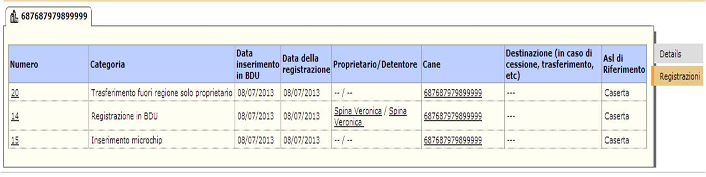

Home
La prima finestra visualizzata dopo l'identificazione dell'utente è la home page.
La mia Home page consente di visualizzare la pagina principale del Gisa
Nel modulo sono presenti i seguenti link :
1. La mia Home Page, consente di visualizzare la pagina principale del GISA
2. Segnalazioni, consente agli utenti di segnalare anomalie, errori,suggerimenti sulle Imprese Alimentari,le Dia, gli Stabilimenti etc.
3. Comunicazioni, Interne è un sistema di mail interno degli operatori di GISA.
4. Impostazioni, consente la gestione e la modifica del proprio account.
Elenco Cessioni Aperte
Ciascun utente nella propria home page ha a disposizione l'elenco delle cessioni appese per la propria ASL.
Dopo l'inserimento
Anagrafe Animali
Il modulo ....
Registrazione Animale in Anagrafe
La funzionalità di inserimento animale è accessibile ....
Gestione Registrazioni
Dopo l'inserimento dell'animale è possibile effettuare sullo stesso delle registrazioni....
